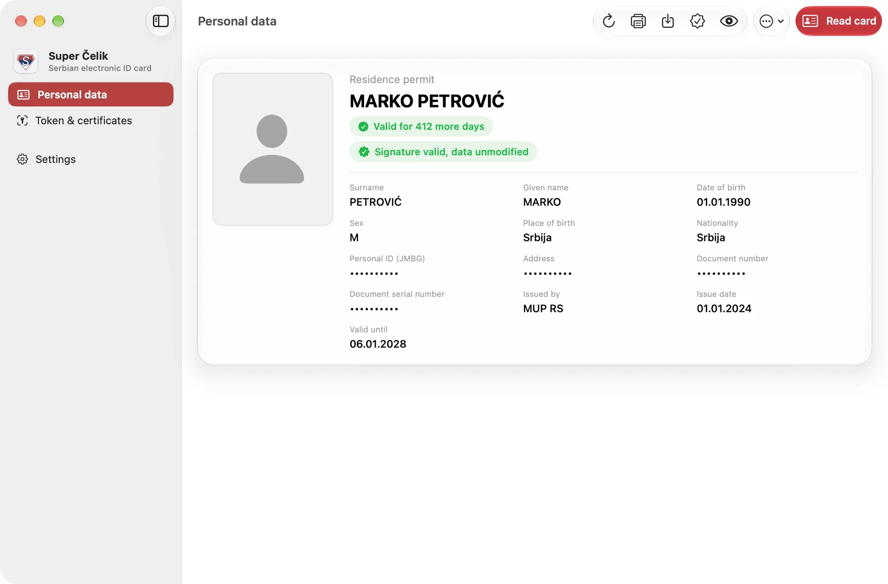

Личные данные и фото
Имя, личный номер, адрес, документ и фото. Чувствительные поля скрыты, пока вы их не покажете.
ВНЖ, ПМЖ, ID-карта: считывайте, подписывайте, управляйте PIN-кодом. Безопасно и приватно с Super Čelik



Super Čelik заменяет Čelik и TrustEdge ID: читает карту, проверяет подпись МУП, печатает, подписывает файлы и помогает войти на eid.gov.rs.
Имя, личный номер, адрес, документ и фото. Чувствительные поля скрыты, пока вы их не покажете.
Подпись карты проверяется по цепочке сертификатов МУП. Видно, что данные не подделаны.
Приложение само ставит драйвер карты (на Mac и в Windows), и Chrome, Safari и Edge видят сертификат для входа на государственные порталы.
Печатная форма в стиле официальной: сохраните в PDF или отправьте на принтер.
Смена PIN, разблокировка по PUK, электронная подпись документов (.p7s) ключом карты.
Нет аккаунта, аналитики и серверов. Данные карты не покидают устройство и стираются автоматически.
Одинаковые возможности на macOS, Windows, Linux, Android, iPhone и iPad.
Личные данные, фото, срок действия и проверка подписи МУП. Личный номер и адрес скрыты, пока вы их не покажете.
Сертификаты карты с проверкой цепочки до МУП, смена PIN, разблокировка по PUK и подпись файлов.
Личные данные, фото, срок действия и проверка подписи МУП. Личный номер и адрес скрыты, пока вы их не покажете.
Сертификаты карты с проверкой цепочки до МУП, смена PIN, разблокировка по PUK и подпись файлов.
Личные данные, фото, срок действия и проверка подписи МУП. Личный номер и адрес скрыты, пока вы их не покажете.
Сертификаты карты с проверкой цепочки до МУП, смена PIN, разблокировка по PUK и подпись файлов.
Подключите считыватель смарт-карт по USB-C: приложение само увидит его и карту, данные и проверка подписи появятся на экране.
Приложение подстраивается под тему системы. Данные скрываются и стираются сами.
Чтение через USB-ридер смарт-карт (USB-C или переходник OTG): данные, фото и проверка подписи.
Смена PIN, разблокировка по PUK и подпись файла ключом карты.
Никуда. У приложения нет аккаунтов, аналитики и серверов. Карта читается локально, данные хранятся только в памяти и стираются при закрытии или по таймеру. Код открыт, его можно проверить.
Это одно универсальное приложение: найдите Super Čelik в App Store или нажмите кнопку «Apple» вверху страницы.
Нажмите кнопку Windows и запустите скачанный установщик. Если SmartScreen пишет «Windows защитила ваш компьютер», нажмите «Подробнее» → «Выполнить в любом случае»: приложение пока не подписано платным сертификатом издателя. Установщику нужны права администратора, потому что драйвер карты ставится в системную папку. Драйвер для входа в браузере по сертификату ставится вместе с программой, официальный драйвер МУП / NetSeT не нужен.
Откройте эту страницу на телефоне и нажмите кнопку Android: скачается APK. Android предложит разрешить установку из неизвестных источников для вашего браузера, разрешите и подтвердите. Затем вставьте карту в USB-ридер и подключите его к телефону (USB-C или переходник OTG), чтение начнётся само.
На компьютере — любой USB-ридер смарт-карт (PC/SC). На iPhone и iPad — ридер, подключаемый по USB-C. На Android — USB-ридер смарт-карт, подключаемый по USB-C или через переходник OTG. NFC не используется.
На Mac запустите приложение один раз, вставьте карту, затем полностью закройте Chrome (⌘Q) и откройте сайт снова. В Windows драйвер уже установлен вместе с приложением, Chrome и Edge увидят сертификат карты.
Откройте «Терминал» и выполните pluginkit -m -p com.apple.ctk-tokens: в списке должна быть строка с app.supercelik (драйвер загружен). Затем security list-smartcards: должна появиться строка app.supercelik.token:SuperCelik-… (система видит карту). Если строки нет, выньте карту и вставьте снова (при необходимости выньте и сам ридер), подождите пару секунд и повторите команду. Когда строка появилась, полностью закройте Chrome (⌘Q) и откройте сайт снова.
Нажмите кнопку Linux: скачается пакет .deb для вашего процессора (x64 или arm64). Установите его: sudo apt install ./SuperCelik-….deb. Нужные службы (pcscd, драйвер ридера) подтянутся сами. Для других дистрибутивов на странице релиза есть .tar.gz. Версия для Linux пока в бете: напишите, что получилось, в разделе Issues на GitHub. Для входа в браузере приложение предложит подключить модуль карты к Firefox и Chrome.
Электронная ID-карта, карта иностранца и вид на жительство нового образца (RP2024). Старая карта Apollo пока не поддерживается.
Неверный PIN тратит попытку: после нескольких ошибок карта блокируется. Вводите PIN только в системном окне или в самом приложении.
Нет. Это независимая реализация, не связанная с МУП РС и NetSeT/Veridos.